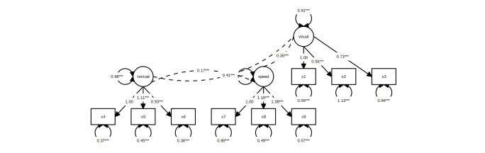
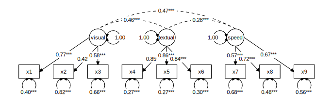
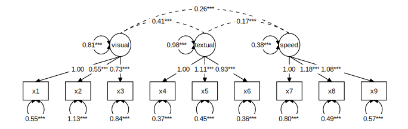
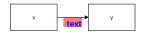

Plotting graphs for structural equation models
Source:vignettes/Plotting_graphs.Rmd
Plotting_graphs.RmdtidySEM offers a user-friendly, tidy workflow for plotting graphs for SEM models. The workflow is largely programmatic, meaning that graphs are created mostly automatically from the output of an analysis. At the same time, all elements of the graph are stored as data.frames, which allows swift and easy customization of graphics, and artistic freedom. Some existing graphing packages automatically create a layout, but are very difficult to customize. Particularly for complex SEM models, it may be preferable to make the layout by hand, including only nodes one wishes to plot, and reporting the rest in a comprehensive table of coefficients (e.g., one obtained through table_results().
For users wholly unfamiliar with SEM graphs, I recommend reading the vignette about SEM graphing conventions first.
Let’s load the required packages:
The tidySEM workflow
The workflow underlying graphing in tidySEM is as follows:
- Run an analysis, e.g., using
lavaan::sem()orMplusAutomation::mplusModeler(), passing the output to an object, e.g.,fit - Plot the graph using the function
graph(fit), or customize the graph further by following the optional steps below. -
Optionally Examine what nodes and edges can be extracted from the fit model object, by running
get_nodes(fit)andget_edges(fit) -
Optionally Specify a layout for the graph using
get_layout() -
Optionally, prepare graph data before plotting, by running
prepare_graph(fit, layout). Store the resulting graph data in an object, e.g.,graph_data -
Optionally, access the nodes and edges in
graph_datausingnodes(graph_data)andedges(graph_data) -
Optionally, modify the nodes and edges in
graph_datausingnodes(graph_data) <- ...andedges(graph_data) <- ...
This workflow ensures a high degree of transparency and customizability. Objects returned by all functions are “tidy” data, i.e., tabular data.frames, and can be modified using the familiar suite of functions in the ‘tidyverse’.
Example: Graphing a CFA
Step 1: Run an analysis
As an example, let’s make a graph for a classic lavaan tutorial example for CFA. First, we conduct the SEM analysis:
Step 2: Plot the graph
At this point, we could simply plot the graph:
graph_sem(model = fit)
This uses a default layout, provided by the igraph package. However, the node placement is not very aesthetically pleasing. One of the areas where tidySEM really excels is customization. Because every aspect of the graph is represented as tidy data (basically, a spreadsheet), it is easy to move nodes around and create a custom layout.
Optional step 3: Customizing the layout
In tidySEM, the layout is specified as a matrix (grid) with node names and empty spaces (NA or ""). There are essentially three ways to specify the layout:
- Automatically, from the fit model
- Manually in R
- In a spreadsheet program
Automatically generate layout for a model
The example above used an automatically generated layout for the fit model (lavaan or Mplus). For this, the graph_sem() function makes use of the function igraph::layout_as_tree(), or other layout functions in the igraph package. To get this layout as a matrix, you can run:
get_layout(fit)
#> [,1] [,2] [,3] [,4] [,5] [,6] [,7] [,8]
#> [1,] NA NA NA NA NA "visual" NA NA
#> [2,] NA "textual" NA NA "speed" "x1" "x2" "x3"
#> [3,] "x4" "x5" "x6" "x7" "x8" "x9" NA NA
#> attr(,"class")
#> [1] "layout_matrix" "matrix" "array"Other layout functions from the igraph package can be used by specifying the layout_algorithm = ... argument:
get_layout(fit, layout_algorithm = "layout_in_circle")
#> [,1] [,2] [,3] [,4] [,5]
#> [1,] NA NA NA "x5" NA
#> [2,] NA "x6" "x4" "x3" "x2"
#> [3,] "x8" "x7" "textual" "x1" NA
#> [4,] NA "x9" "visual" "speed" NA
#> attr(,"class")
#> [1] "layout_matrix" "matrix" "array"
get_layout(fit, layout_algorithm = "layout_on_grid")
#> [,1] [,2] [,3] [,4]
#> [1,] "x6" "x7" "x8" "x9"
#> [2,] "x2" "x3" "x4" "x5"
#> [3,] "visual" "textual" "speed" "x1"
#> attr(,"class")
#> [1] "layout_matrix" "matrix" "array"Specifying layout manually in R
Manually specifying the layout can be done by providing node names and empty spaces (NA or ""), and the number of rows of the desired layout matrix. For example:
get_layout("c", NA, "d",
NA, "e", NA, rows = 2)
#> [,1] [,2] [,3]
#> [1,] "c" NA "d"
#> [2,] NA "e" NA
#> attr(,"class")
#> [1] "layout_matrix" "matrix" "array"Of course, it is also possible to simply define a matrix using matrix().
Specifying layout in a spreadsheet program
Specifying the layout in a spreadsheet program is very user-friendly, because one can visually position the nodes, e.g.:

To obtain the layout matrix, one can save the spreadsheet as .csv file and load it in R like this:
read.csv("example.csv")Alternatively, one can select the layout as in the image above, copy it to the clipboard, and then read it into R from the clipboard. This works differently on Windows and Mac.
On Windows, run:
read.table("clipboard", sep = "\t")On Mac, run:
read.table(pipe("pbpaste"), sep="\t")#> V1 V2 V3
#> 1 x1 x2 x3
#> 2 visualExamples of user-defined layout
We can specify a simple layout for two hypothetical nodes x and y is generated as follows:
get_layout("x", "y", rows = 1)
#> [,1] [,2]
#> [1,] "x" "y"
#> attr(,"class")
#> [1] "layout_matrix" "matrix" "array"For a mediation model, one might specify a layout like this:
get_layout("", "m", "",
"x", "", "y", rows = 2)
#> [,1] [,2] [,3]
#> [1,] "" "m" ""
#> [2,] "x" "" "y"
#> attr(,"class")
#> [1] "layout_matrix" "matrix" "array"For a three-item CFA model, one might specify:
get_layout("", "F", "",
"y1", "y2", "y3", rows = 2)
#> [,1] [,2] [,3]
#> [1,] "" "F" ""
#> [2,] "y1" "y2" "y3"
#> attr(,"class")
#> [1] "layout_matrix" "matrix" "array"And for the CFA model we estimated above:
lay <- get_layout("", "", "visual","","textual","","speed","", "",
"x1", "x2", "x3", "x4", "x5", "x6", "x7", "x8", "x9", rows = 2)We could plot the CFA model with this custom layout as follows:
graph_sem(fit, layout = lay)Optional step 4: Examine nodes and edges
The function For the simple model above, it is easy to verify the names of the nodes and edges from the syntax above: The nodes consist of three latent variables (visual, textual, and speed), and nine observed variables (x1-x9). The edges are nine factor loadings - and three latent variable correlations, included by default. We can confirm which nodes are available by running get_nodes():
get_nodes(fit)
#> name shape label
#> 1 visual oval visual
#> 2 textual oval textual
#> 3 speed oval speed
#> 4 x1 rect x1
#> 5 x2 rect x2
#> 6 x3 rect x3
#> 7 x4 rect x4
#> 8 x5 rect x5
#> 9 x6 rect x6
#> 10 x7 rect x7
#> 11 x8 rect x8
#> 12 x9 rect x9And for the edges:
get_edges(fit)
#> from to arrow label connect_from connect_to curvature
#> 1 visual x1 last 1.00 NA NA NA
#> 2 visual x2 last 0.55*** NA NA NA
#> 3 visual x3 last 0.73*** NA NA NA
#> 4 textual x4 last 1.00 NA NA NA
#> 5 textual x5 last 1.11*** NA NA NA
#> 6 textual x6 last 0.93*** NA NA NA
#> 7 speed x7 last 1.00 NA NA NA
#> 8 speed x8 last 1.18*** NA NA NA
#> 9 speed x9 last 1.08*** NA NA NA
#> 10 x1 x1 both 0.55*** NA NA NA
#> 11 x2 x2 both 1.13*** NA NA NA
#> 12 x3 x3 both 0.84*** NA NA NA
#> 13 x4 x4 both 0.37*** NA NA NA
#> 14 x5 x5 both 0.45*** NA NA NA
#> 15 x6 x6 both 0.36*** NA NA NA
#> 16 x7 x7 both 0.80*** NA NA NA
#> 17 x8 x8 both 0.49*** NA NA NA
#> 18 x9 x9 both 0.57*** NA NA NA
#> 19 visual visual both 0.81*** NA NA NA
#> 20 textual textual both 0.98*** NA NA NA
#> 21 speed speed both 0.38*** NA NA NA
#> 22 visual textual none 0.41*** NA NA 60
#> 23 visual speed none 0.26*** NA NA 60
#> 24 textual speed none 0.17*** NA NA 60Optional step 5: accessing graph data before plotting
One important feature of tidySEM graphing is that the data used to compose the plot can be conveniently accessed an modified before plotting. First, use prepare_graph() to assign the plot data to an object.
graph_data <- prepare_graph(model = fit, layout = lay)Optional step 6: Access the nodes and edges
The nodes and edges can be examined using nodes(graph_data) and edges(graph_data):
nodes(graph_data)
#> name shape label x y node_xmin node_xmax node_ymin node_ymax
#> 1 speed oval speed 14 4 13.5 14.5 3.5 4.5
#> 2 textual oval textual 10 4 9.5 10.5 3.5 4.5
#> 3 visual oval visual 6 4 5.5 6.5 3.5 4.5
#> 4 x1 rect x1 2 2 1.4 2.6 1.6 2.4
#> 5 x2 rect x2 4 2 3.4 4.6 1.6 2.4
#> 6 x3 rect x3 6 2 5.4 6.6 1.6 2.4
#> 7 x4 rect x4 8 2 7.4 8.6 1.6 2.4
#> 8 x5 rect x5 10 2 9.4 10.6 1.6 2.4
#> 9 x6 rect x6 12 2 11.4 12.6 1.6 2.4
#> 10 x7 rect x7 14 2 13.4 14.6 1.6 2.4
#> 11 x8 rect x8 16 2 15.4 16.6 1.6 2.4
#> 12 x9 rect x9 18 2 17.4 18.6 1.6 2.4
edges(graph_data)
#> from to label arrow curvature connect_from connect_to
#> 1 visual x1 1.00 last NA left right
#> 2 visual x2 0.55*** last NA bottom right
#> 3 visual x3 0.73*** last NA bottom top
#> 4 textual x4 1.00 last NA bottom right
#> 5 textual x5 1.11*** last NA bottom top
#> 6 textual x6 0.93*** last NA bottom left
#> 7 speed x7 1.00 last NA bottom top
#> 8 speed x8 1.18*** last NA bottom left
#> 9 speed x9 1.08*** last NA right left
#> 10 x1 x1 0.55*** both NA bottom bottom
#> 11 x2 x2 1.13*** both NA bottom bottom
#> 12 x3 x3 0.84*** both NA bottom bottom
#> 13 x4 x4 0.37*** both NA bottom bottom
#> 14 x5 x5 0.45*** both NA bottom bottom
#> 15 x6 x6 0.36*** both NA bottom bottom
#> 16 x7 x7 0.80*** both NA bottom bottom
#> 17 x8 x8 0.49*** both NA bottom bottom
#> 18 x9 x9 0.57*** both NA bottom bottom
#> 19 visual visual 0.81*** both NA right right
#> 20 textual textual 0.98*** both NA left left
#> 21 speed speed 0.38*** both NA left left
#> 22 visual textual 0.41*** none 60 top top
#> 23 visual speed 0.26*** none 60 top top
#> 24 textual speed 0.17*** none 60 top topOptional step 7: Modify the nodes and edges
At this stage, we may want to improve the basic plot slightly. The functions nodes(graph_data) <- ... and edges(graph_data) <- ... can be used to modify the nodes and edges. These functions pair well with the general ‘tidyverse’ workflow. For example, we might want to print node labels for latent variables in Title Case instead of just using the variable names:
library(dplyr)
library(stringr)
nodes(graph_data) <- nodes(graph_data) %>%
mutate(label = str_to_title(label))Now, for the edges, we see that the default edging algorithm has connected some nodes side-to-side (based on the smallest possible Euclidian distance). However, in this simple graph, it makes more sense to connect all nodes top-to-bottom - except for the latent variable covariances. We can use the same conditional replacement for the edges:
Plot the customized graph
We can plot a customized graph using plot(graph_data); a generic plot method for sem_graph objects:
plot(graph_data)
Connecting nodes
The functions graph_sem() and prepare_graph() will always try to connect nodes in an aesthetically pleasing way. To do this, they connect nodes by one of the four sides (top, bottom, left and right), based on the shortest distance between two nodes. Alternatively, users can specify a value to the angle parameter. This parameter connects nodes top-to-bottom when they are within angle degrees above and below each other. Remaining nodes are connected side-to-side. Thus, by increasing angle to a larger number (up to 180 degrees), we can also ensure that all nodes are connected top to bottom:
graph_sem(model = fit, layout = lay, angle = 170)
Visual aspects
The functions graph_sem() and prepare_graph() accept several optional visual parameters that can be used to customize the resulting image (see ?graph_sem()). These parameters can be passed as extra columns to the nodes() and edges() objects. Specifically, edges have the following aesthetics (see ?geom_path()):
-
linetype: The type of line, e.g., continuous (linetype = 1or dashedlinetype = 2) -
colour: The colour of the line (e.g.,colour = "red"orcolour = "blue") -
size: The size of the line (e.g.,size = 1orsize = 2) -
alpha: The transparency of the line (e.g.,alpha = 1oralpha = .2)
edg <- data.frame(from = "x",
to = "y",
linetype = 2,
colour = "red",
size = 2,
alpha = .5)
graph_sem(edges = edg, layout = get_layout("x", "y", rows = 1))
Nodes have the following aesthetics (see ?geom_polygon()):
-
linetype: The type of line surrounding the node, e.g., continuous (linetype = 1or dashedlinetype = 2) -
colour: The colour of the line surrounding the node (e.g.,colour = "red"orcolour = "blue") -
fill: The interior colour of the node (e.g.,colour = "red"orcolour = "blue") -
size: The size of the line (e.g.,size = 1orsize = 2) -
alpha: The transparency of the node (e.g.,alpha = 1oralpha = .2)
edg <- data.frame(from = "x",
to = "y")
nod <- data.frame(name = c("x", "y"),
shape = c("rect", "oval"),
linetype = c(2, 2),
colour = c("blue", "blue"),
fill = c("blue", "blue"),
size = c(2, 2),
alpha = .5)
graph_sem(edges = edg, nodes = nod, layout = get_layout("x", "y", rows = 1))
These aesthetics can also be passed to the sem_graph object after preparing the data, for example, for highlighting a specific model element, such as the low factor loading for x2 on visual in the CFA example from before:
edges(graph_data) %>%
mutate(colour = "black") %>%
mutate(colour = replace(colour, from == "visual" & to == "x2", "red")) %>%
mutate(linetype = 1) %>%
mutate(linetype = replace(linetype, from == "visual" & to == "x2", 2)) %>%
mutate(alpha = 1) %>%
mutate(alpha = replace(alpha, from == "visual" & to == "x2", .5)) -> edges(graph_data)
plot(graph_data)
Visual aspects of edge labels
Like nodes and edges, edge labels can be customized. Labels have the same aesthetics as the ggplot function geom_label() (see ?geom_label). However, to disambiguate them from the edge aesthetics, all label aesthetics are prefaced by "label_":
-
label_colour: The colour of the label text (e.g.,label_colour = "red") -
label_fill: The colour of the rectangle behind the label text, ( e.g.,label_fill = "blue") -
label_size: The font size of the label (e.g.,label_size = 4) -
label_alpha: The transparency of the label (e.g.,alpha = 1oralpha = .2) -
label_family: The font family of the label text. By default, three are available:"serif","sans"and"mono" -
label_fontface: The face of the label text:"plain","bold","italic", or "bold.italic" -
label_hjust: Horizontal justification of label text; either a string ("left","center","right") or a number between 0 and 1 (left = 0, center = 0.5, right = 1) -
label_vjust: Vertical justification of label text; either a string ("top","middle","bottom") or a number between 0 and 1 (top = 1, middle = 0.5, bottom = 0) -
label_lineheight: Line height for multiline text -
label_location: Where along the edge to plot the label; a number between 0 (beginning) and 1 (end)
edg <- data.frame(from = "x",
to = "y",
label = "text",
label_colour = "blue",
label_fill = "red",
label_size = 6,
label_alpha = .5,
label_family = "mono",
label_fontface = "bold",
label_hjust = "left",
label_vjust = "top",
label_lineheight = 1.5,
label_location = .2
)
graph_sem(edges = edg, layout = get_layout("x", "y", rows = 1))